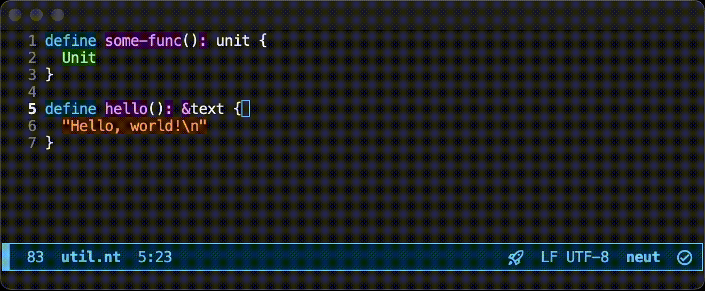
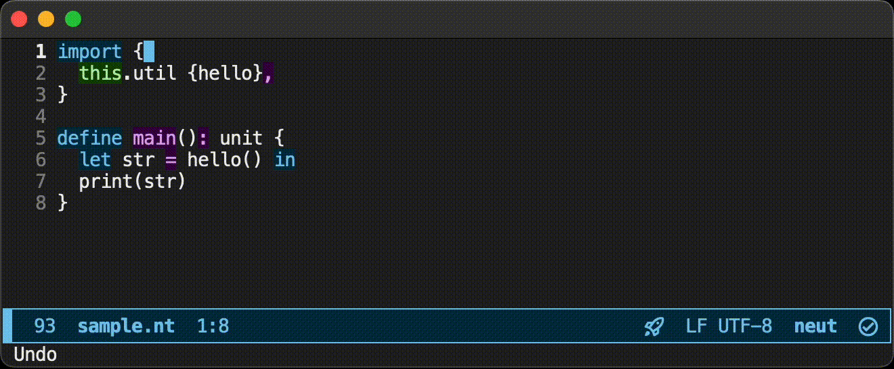
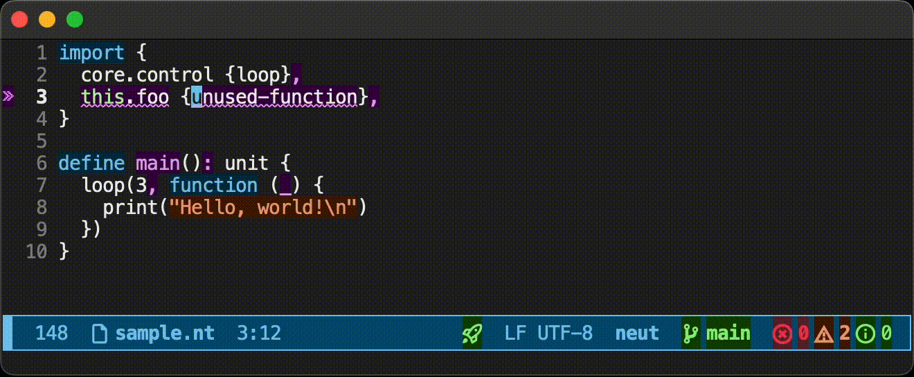

Lovely LSP Showcase
The compiler contains an LSP server. Let's see what it is like.
Showcase
The LSP server currently has the following features:
- Lint
- Completion (+ automatic import)
- Jump to Definition
- Find References
- Format on Save
- Remove Unused Imports
- Show the Type of a Variable
- Highlight Symbols
Lint

Completion (+ automatic import)
Jump to Definition

Find References

Format on Save

Remove Unused Imports

Show the Type of a Variable

Highlight Symbols